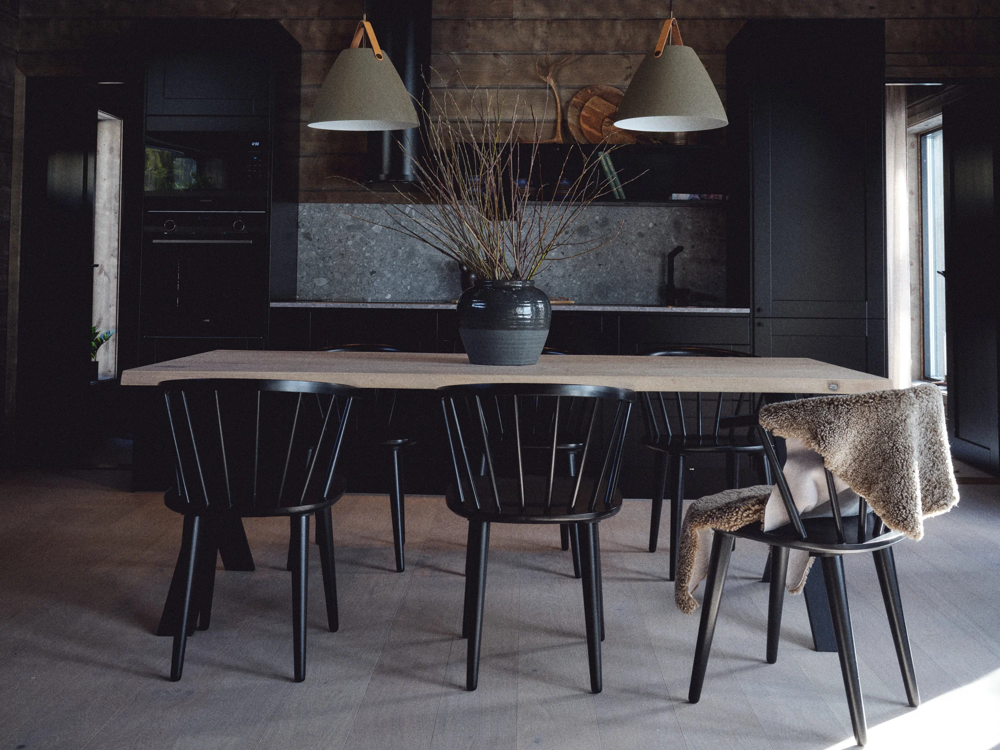
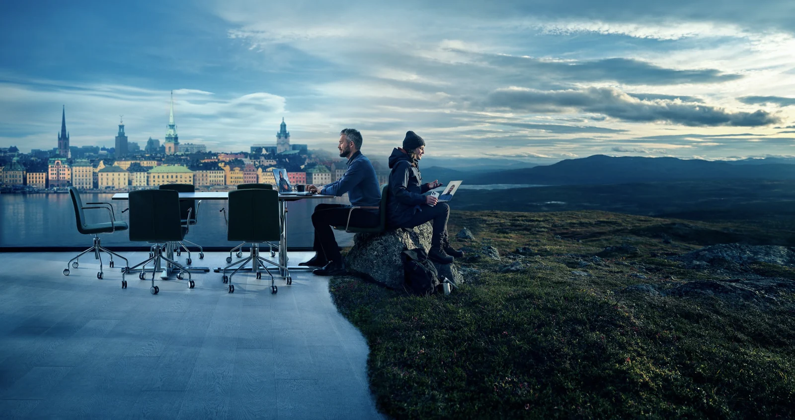

Rum att uppleva.
Bilder att minnas.
Interiör, styling och produktion.
Från första idé till färdigt uttryck.
Ett kreativt öga.
Flera sätt att göra skillnad.
Vi formar miljöer och visuella uttryck. Från ett hem att längta till, till en bild eller film som fångar rätt känsla.

Interiör/Koncept
Miljöer att trivas och samlas i.

Home Styling
Lyft fram hemmets möjligheter.

Stylist/Casting
Rätt uttryck. Rätt människor.

Produktion/regi
Berättelser som tar form.
Vi ser helheten.
Och detaljerna.
Ett material, ett ljus, en människa i rätt miljö. Vi arbetar med det visuella uttrycket, oavsett om det ska bli ett rum, en bild eller en film.
Interiör/Koncept
Vi skapar miljöer där människor vill vara. Från små lounger, caféer och barer till kontor, butiker, hotell och privata hem. Vi arbetar med helheten, från konceptutveckling till leverans av färdig möblering.
Utforska interiör/konceptHome Styling
Inför fotografering och visning stylar vi bostaden så att dess möjligheter blir tydliga. Med genomtänkt möblering och omsorg om detaljerna hjälper vi den som tittar att föreställa sig ett liv i hemmet.
Utforska home stylingStylist/Casting
Med erfarenhet av mode och trender arbetar vi med styling av modeller och miljöer. Vi hjälper också till med förslag på modeller och locations, så att människorna och platsen ger projektet rätt uttryck.
Utforska stylist/castingProduktion/regi
Vi tar reklamfilmen från idé till färdigt resultat. Det innebär manus, planering av inspelningen och val av skådespelare och locations. Vi finns med också i efterproduktionen, från klippning till finish, med kommunikation och samarbete genom hela processen.
Utforska produktion/regi
Färg. Material.
Karaktär.
Skogsgröna luckor och ett draperi i bränt orange. Ett av våra interiöra koncept för Destination Åre.
Se fler miljöer